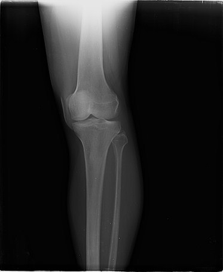
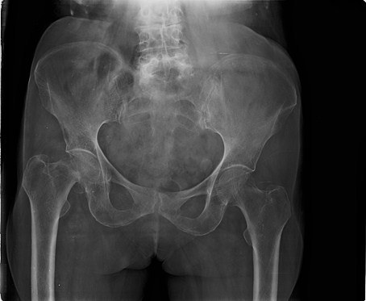

Two kinds of test
We trained hip, knee and shoulder X-ray models on six public datasets, then tested them on familiar pictures and on a dataset they had never seen.
X-ray AI can score almost perfectly just by recognising which dataset a picture came from, not by understanding the bones. OrthoTrace shows when that happens, on any X-ray you choose.
Imagine a student who notices that every Maths paper in the practice pile is printed on blue paper.
In practice tests the student scores 100% by checking the paper colour. In the real exam the paper is white, and the student fails. The score measured the paper, not the subject.
X-ray AI can do the same. Public X-ray collections mostly hold one joint each, so picture size, borders and file type give the answer away. We tested whether the AI sees the bone or just the dataset.
Balanced accuracy of the five main models, from the saved study results.
We trained hip, knee and shoulder X-ray models on six public datasets, then tested them on familiar pictures and on a dataset they had never seen.
A model that only reads picture size got 97% on familiar data and 33% on new data, the same as guessing.
A great score on a public dataset does not mean the AI works at a new hospital. Test on a new source before trusting a model.
Choose a sample image, or upload your own JPEG or PNG. Nothing is saved.
Four models name the joint and show how sure they are, with a heat map of what influenced them. If they disagree, the training data matters.
A blind model that sees only file size and format also guesses. If it agrees, the answer could be a shortcut.
This is one real X-ray from our test set. The first model was trained on all six datasets. The second was trained without the dataset this picture comes from. When the training data changes, the answer can change. That is what this project measures.

Pooled · KneeNo FracAtlas · ShoulderConfidence ≠ correctnessONE IMAGE. DIFFERENT TRAINING.how sure the first model is.
A score, not the chance of being right.
EfficientNet-B3 · all six sources · seed 0
95.3% softmax confidence
Saved predictions. The recorded knee label is provisional.
Never saw the multi-joint source it is tested on
Never saw Kaggle hip implant radiographs
Never saw UCI shoulder implant radiographs
The input stays the same. The training sources change. Compare the effect directly.
Choose Hip, Knee, or Shoulder to see the four benchmark predictions for a saved radiograph. Open the live demo to run the expanded six-region model or upload an image.
Run the live models →
FRACATLAS SAMPLE · SAVED PREDICTIONSRecorded FracAtlas knee labels are provisional and await clinician review.
Run this exact image live ↗Upload an X-ray or choose a sample. The workbench shows the expanded anatomy scores, four benchmark predictions and a Grad-CAM overlay.
JPEG, PNG, BMP, WebP or TIFF · up to 12 MB.
Greyscale, 160 px and the recorded normalization.
One six-region model and four benchmark checkpoints run locally on CPU.
Region scores and cutoffs, benchmark agreement, and the pooled checkpoint’s Grad-CAM overlay.
The checkpoints differ in their training sources. The report compares their joint predictions, scores and agreement.
points lost when the test uses a dataset the model has never seen. This model looks only at a picture’s width, height and shape, not the bones, yet it scores 97% on familiar data.
Compare test settings →All reported values come from saved project artifacts. Explore confidence intervals and the provisional-label limitations in Results.
Inspect all models and intervals ↗Four periods. Original schematic reconstructions. View angle, zoom, labels and separated components.
Open the implant timeline ↗What is medical implantation? →Search the actual bibliography, compare themes and inspect the reading limits. Full-text and venue checks remain explicit.
EXISTING WORK → OUR CONTRIBUTIONEstablished models and datasets. Our source-controlled study, anatomy-free controls and integrated comparison workbench.
EVIDENCE BY AREA · TRACEABLE ARTIFACTSWhere each part is documented, measured outcomes, manuscript, test evidence and the demo and viva guide.
Hip · Knee · Shoulder · Hand · Leg · Elbow